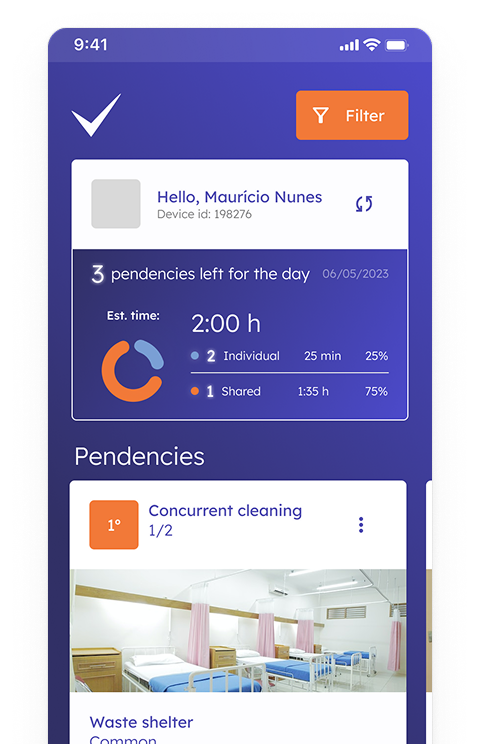
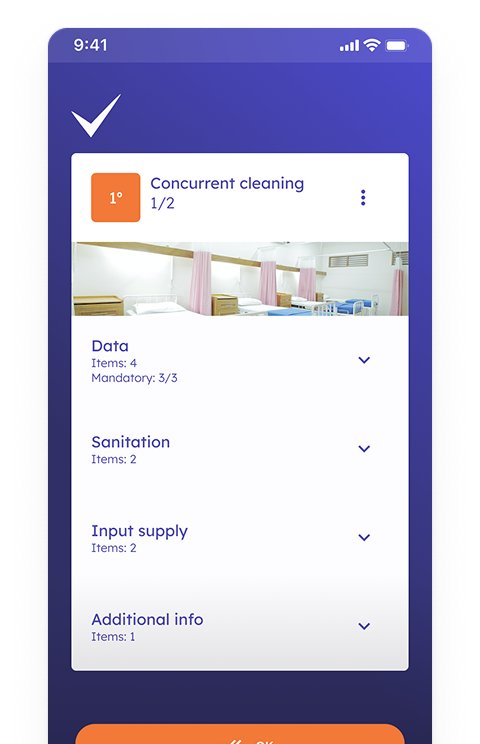
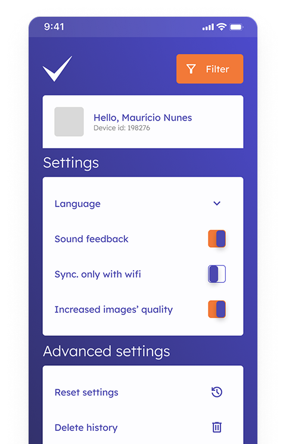
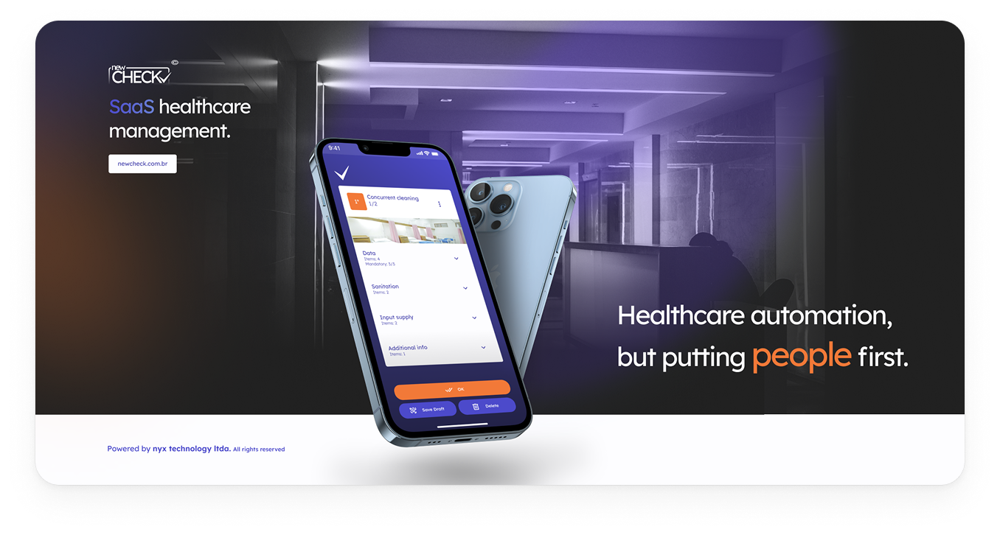

NewCheck app automates processes in the healthcare sector as a SaaS B2B provider. The company’s current target demographic is made up of companies in the healthcare sector that specialize in providing health related services such as accommodation and comfort to their respective clients.



Role
UX/Product Designer
Duration
2 months
Team
1 Stakeholder (Comp. CEO)
Problem
The company was interested in exploring new design solutions for its flagship product - an application for digitizing and optimizing processes providing quality management, indexes and KPIs. How to revamp and enhance design without losing sight of the main axes and dynamics possible in the product environment?
Given the enormous scope of the data structure and functionality behind the app, it was necessary to find a balance between functionality and visual creativity, defining limits and guiding design choices while bearing this scenario in mind.
Solution
The solution was to apply the theoretical principles of design currents (e.g. human-centered and inclusive design principles, usability heuristics) in the best possible way, adding simple and minimalist aesthetics within a usable and dynamic product. The facility worker’s user journey and persona was the focus, ultimately showing clearly to him how many tasks he had for the day, while guiding him to the next steps and remaining activities in his shift.
35+
Components
2
Flows and forms reimagined
